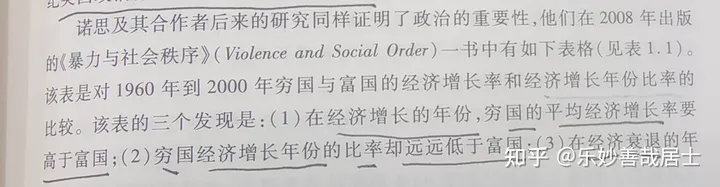
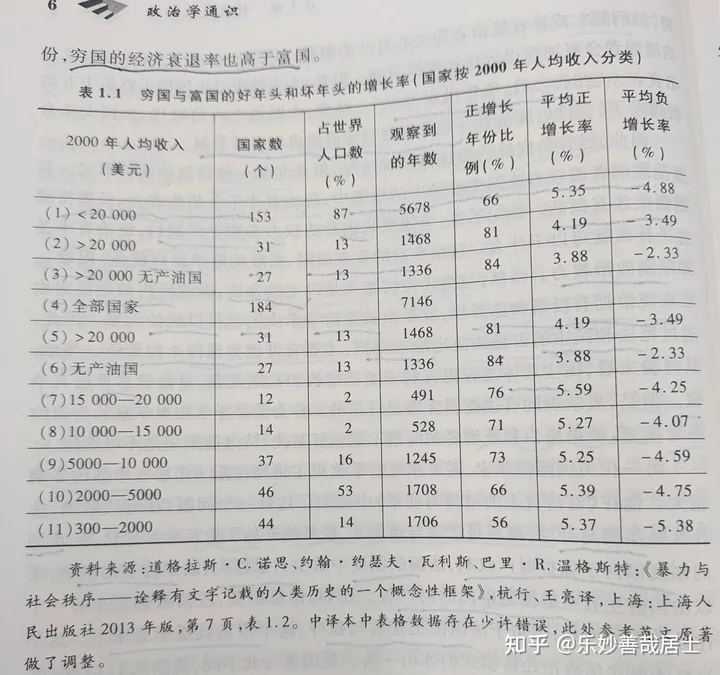

1.1 政治是国家兴衰的关键
“人是天生的政治动物”——亚里士多德《尼各马可伦理学》
政治主要影响两个方面：经济和社会稳定
书中的举例（《独裁、民主与发展》曼瑟-奥尔森，1993）：
1. 军阀混战
经济：毁灭性打击，长期稳定：无
问题：破坏社会的正常激励机制
每个流寇都只有短期的统治，只考虑短期内烧杀抢掠，社会陷入混乱，无人生产，四处逃亡
（提到一个观点：内战死很多人是因为生产被破坏，经济崩溃，大多数人只能饿死）
2. 坐寇统治
经济和长期稳定：取决于统治者
改进：采用税收获取长期利益，统治者固定，不再烧杀抢掠
问题：
（1）无法保证坐寇不会施行暴政、苛税
（2）坐寇死后的继承问题
“我死后，哪管洪水滔天”——路易十五
3. 宪政民主
经济和长期稳定：是
通过宪法和民主来维护社会稳定
宪政即”限政”，民主方法：居民的投票权和选举权
穷国和富国的经济增长率和经济增长比率研究（《暴力与社会秩序》诺思）


发现：
- 经济增长的年份，穷国的平均经济增长率高于富国
- 穷国的经济增长年份远低于富国
- 经济衰退的年份，穷国经济衰退率高于富国
结论：
构建有效社会秩序的困难，似乎是穷国经济增长困境的根源
诺思悖论：
国家既是经济增长的关键，也是人为的经济衰退的根源
1.2 中国人的政治观
“政,正也” ——《说文解字》
一、政
（1）政事
《尚书》提到的”八政“
（2）政权、权柄
”天下有道，则政不再大夫” ——《论语》
（3）政令和政策
（4）主持政事
”其在政府，与韩琦同心辅政“——《宋史·欧阳修传》
（5）国家的制度和秩序
“大乱宋国之政”——《春秋左传》
（6）符合礼仪和道德的做法 – 儒家
“政者正也，子帅以正，熟敢不正”——《论语》
二、治
（1）古代是水名
“治，水，出东莱曲城阳丘山，南入海。”——《说文》
（2）引申为“治水”“治理”“整治”
“奉职循礼，亦可以为治，何以威严哉？“——《史记·循吏列传序》
（3）政治清明，社会安定
”君子安而不忘危，有而不忘亡，治而不忘乱“——《易·系辞下》
三、政治
（1）政事得到治理
”道洽政治，润泽生民“——《尚书·毕命》
（2）政事治理
“至荆州，政治如在夏口”——《宋书·沈攸之传》
（3）治理国家所实行的措施
“掌其政治禁令”——《周礼·地官·遂人》
（4）中国古代通用理解：君主及其大臣统治国家和治理社会的活动
（5）近代：
【1】政治机关之运营
“（《释群》）成国家统治之中枢机关谓之统治机关，统治机关之运营谓之政治。确定表明政治之理想者谓之立法，实行政治之理想者谓之行政。”——《新尔雅》
【2】管理众人之事
“浅而言之，政是众人的事，治就是管理，管理众人的事便是政治。有管理众人之事的力量，便是政权，今以人民管理政事，便叫做民权”——孙中山《民权主义》
【3】上层建筑
“政治是以经济为基础的上层建筑，是经济的集中表现，是以政治权力为核心展开的各种社会活动和社会关系的总和。”——苏联教科书
1.3 孔子和韩非子政治观的分野
儒家：
从伦理角度理解政治，强调政治伦理观、道德观
1）政治包含端正、正直、正确的意思
公曰：“敢问何为政？”孔子对曰：“政者，正也。君为正，则百姓从政矣。君之所为，百姓之所从也。君所不为，百姓何从？”——《礼记·哀公问》
2）政府是社会的道德榜样
季康子问政于孔子。孔子对曰：“政者，正也。子帅以正，孰敢不正？”
3）应该以道德的方式治理政治
为政以德，譬如北辰，居其所而总星共之。
对儒家政治观的评价
1）反：过于强调道德约束、主张个人自律（人治），没有制度和法治手段，靠道德约束能否有效？
2）正：制度无法覆盖所有领域，也需要人们的德行和操守（道德情操），也需要人们的德行来维护好的政治制度
法家
认为人是自利的，趋吉避凶
1）认为国家不过是国君实现抱负和欲望的工具
国者，君之车也
2）政治要靠实力而非道德
上古兢(jing)于道德，中古逐于智谋，当今争于力气
3）管理要赏罚分明
明主之所导制其臣者，二柄而已矣。二柄者，刑德也。何谓刑德？曰：杀戮之谓刑，庆赏之谓德。
4）人是自利的
医善吮人之伤，含人之血，非骨肉之亲也，利所加也。故舆人成舆，则欲人之富贵；匠人成棺，则欲人之夭死也。非舆人仁而匠人贼也，人不贵，则舆不售；人不死，则棺不买。情非憎人也，利在人之死也。
既然人是自私的，那又如何搞政治呢？
西方近代自由主义认为，掌握权力的人可能胡作非为，所以需要对政治权力和掌权者进行约束
而法家则更多从君主角度看问题，讲究如何利用法、术、势来进行有效统治
1.4 古希腊人如何理解政治？
政治是城邦公民参与的统治和管理活动
雅典城邦的民主政体的基本特征：
- 公民大会是雅典最高权力机构,法定人数6000,年满20岁的男性公民均可出席
- 五百人议事会,负责组织、提出和执行公共决策
- 陪审法庭由201~6000人组成,由陪审团对案件进行判决
- 行政官员由抽签和选举产生
- 辅助的组织机构和制度安排: 最高法院、陶片放逐法、支薪制度等
可以看出雅典是直接民主制度,但是也有被排除公共事务的雅典人:
- 外邦人
- 奴隶群体
- 女性和未成年人
具体细节:
- 公民大会法定6000人,但是人数太多无法有效协商,所以设计了五百人制度
- 雅典城邦有10个部落,每个部落派50人组成五百人议事会
- 陪审法庭,人数要求200人以上,主要职责是对案件进行判决
- 行政官员由抽签和直接选举产生,需要专业知识和特殊技能的少数官职靠公民大会直接选举,多数官职靠抽签产生
- 陶片放逐: 某一重要人物被认为有威胁政治的可能,就开展陶片放逐投票,如果投票达到一定数量,就将该人物流放10年(一说是5年)
- 支薪制度: 给出席公共事务的公民支薪,强化民主和政治参与,因为当时多数人需要工作,没有时间参加,没有支薪制度,政治就可能成为少数富人的闲暇活动
雅典民主的政治概念包含几个特性:
- 政治本身就是公民对城邦公共事务的参与
- 公私领域的区分 -> 实际存在了私人空间和个人自由的概念
- 政治的目的是追求公共之善,塑造善的社会
在雅典人看来,他们的东方邻居”波斯”是专制的,并不能算一种政治类型
米诺斯:
一个总所周知的线索就是当前私人生活与公共领域之间的界限。私人领域指的是家庭生活以及个人良知的领域————个人良知即个人凭自己的意愿选择信仰或兴趣。这种私人领域存在的先决条件是：具有统治权威的国家公共领域支持着一个维护公民自主关系的法制体系。具有政治权威的公共法律体系对自己的权力进行限定，唯有这样的条件下，政治才能存在。
《政治科学新手册》
我们认为，不受限制的权力是带有暴力性质的，并且是纯粹的和简单的。除了在一些退化的、极限的意义上事实可能如此之外，这完全不能算作政治权力的运作。纯粹的暴力更多是一种物理力量而不是政治。在我们看来，只有政治参与者行动的约束条件以及在这些约束条件下指导他们行动的策略，才构成政治的本质。